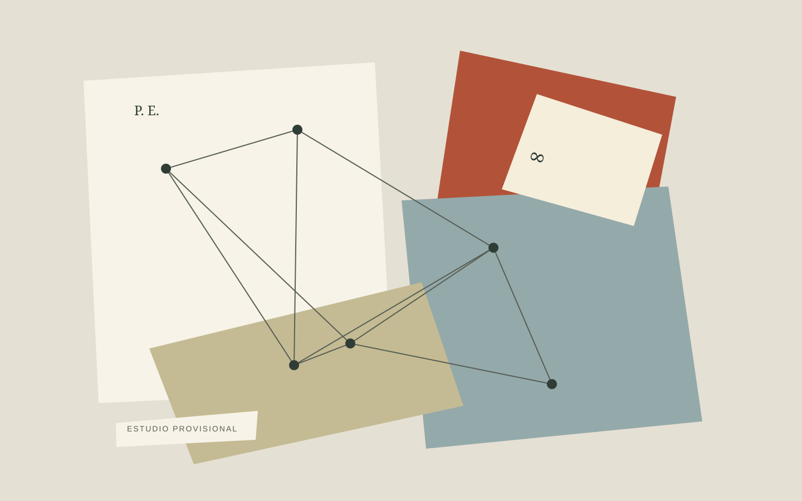

Un proyecto artístico
Atlas de una
vida matemática.
Paul Erdős, entre lugares, encuentros e ideas.

Sobre la obra
Un atlas hecho de fragmentos. Este proyecto propone una mirada a la vida de Paul Erdős a través de lugares, encuentros e ideas: piezas que, al reunirse, dibujan una vida alrededor de las matemáticas.
El collage de papel recortado es el lenguaje de esta exploración. Cada fragmento invita a pensar en las conexiones entre una persona, sus recorridos y las ideas que comparte.
Descripción provisional, pendiente de la versión final de la obra.